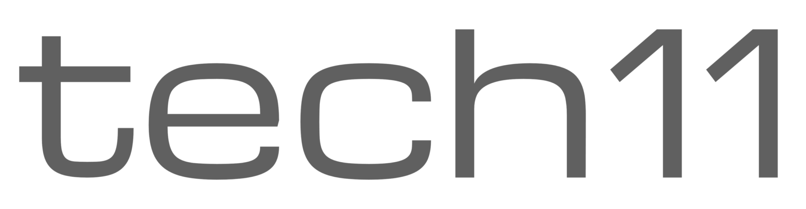
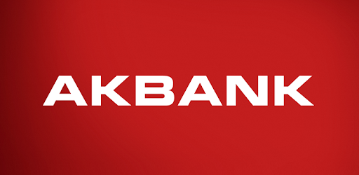
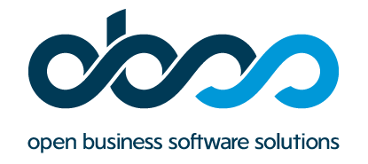
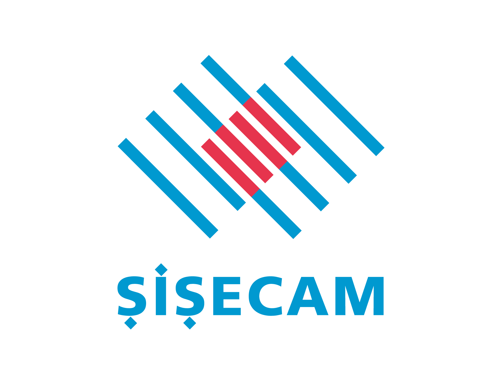

About Me
Experienced Business Analyst & Team Lead with a passion for unraveling complexity and driving strategic solutions. A forward-thinking problem solver, I leverage data-driven insights to shape a future of innovation and efficiency, while also aspiring to mentor and guide the next generation with my knowledge and experience.
8+
Years Experience
3
Key Roles
Experience

Project Manager / People Manager / Business Analyst
tech11 GmbH
Würzburg/Nürnberg, Germany
- Project Manager: For Schwarz Gruppe IPS project, invoicing, task prioritization, customer communication, backlog creation, budget estimation, roadmap monitoring, project planning, configuring and handling customer service desk, additional to release management during IT project.
- Business Team Manager: Attending job interviews and evaluation process of new candidates. People Manager of 7 team members. One to one coaching sessions about professional development and career roadmap. Executing feedback meetings. Handling administrative tasks in communication with HR and top management.
- Release Management: Creating and updating release notes of each core module and preparing email templates for customer communication.
- Customer Service Desk Implementation in JIRA: Customer Service Desk Implementation in JIRA.
- Creation of web-based insurance platform test structure by defining unique ID structure, documentation, and test case organization.
- Managing hybrid test team (Africa-outsource), planning and assigning relevant tasks to team members.
- Introducing test result reports created by combining manual and automatic tests.
Business Analyst
tech11 GmbH
Würzburg, Germany
- Business architecture: E2E Claims module, task module improvements, batches module redesign (UI/UX), Claim Service Center & Claim Handler design, Access Control List for visibility, Claim Events (Accumulated Loss), multi-currency integration, and claim litigation processes design.
- Technical configuration: REST API, Camunda BPMN 2.0, Keycloak, Portainer, BI tools, JS UI components, JSON adaptations.
- Java-based algorithms: Evaluated and integrated into business architecture. Prepared visual and functional support materials.
- Sales support: Customer use cases, presentation materials, and technical hardware support (e.g. DIA - Amsterdam Event).


Associate Consultant
OBSS
Istanbul, Turkey
- Project based business analysis role for customers from many different industries, such as, banking (AKBANK + 4,08 bn € Gross Value), insurance (Anatolia Insurance + 300 m € GV), crypto currency, logistics...
- Mobilet Kiosk Project: Preparing UX report, test cases and detailed analysis of the demo version of the kiosk web application.
- Tosla Prepaid Card Project: Mobile shopping and e-wallet application project with an integration of pre-paid card project. Analysis, process monitoring, error reporting, and process improvement.

Marketing Intern
Sisecam
Istanbul, Turkey
- Improving some basic business functions by using Microsoft excel.
- Preparing and presenting 152 slides of World Glass Report to the foreign executives of the company.
Skills
Core Skills
Technical Skills
Insurance Skills
References
Education
Master of Science (MSc) - International Economic Policy
The Julius Maximilians University of Würzburg
2019 - 2021 | Würzburg, Germany
- Master of Science - MS, International Economic Policy
Exchange Year (Erasmus)
The Julius Maximilians University of Würzburg
2016 - 2017 | Würzburg, Germany
- Business Management (Erasmus Exchange Year)
Bachelor's Degree - Management Engineering (English)
Istanbul Technical University
2012 - 2016 | Istanbul, Turkey
- Management Engineering (English)
University Projects
Istanbul Technical University & Julius Maximilian University of Würzburg
2015 - 2017
- Adopting Blockchain Technology in Insurance Sector: Bachelor's thesis on Blockchain technology in insurance, including feasibility analyses and competitive advantage studies for Mapfre Insurance Company Turkey.
- Global Village 12: Cross-Cultural Management Project, Creative Team.
- ITU Wind-car project: Sponsor negotiations and event organizations.
Certifications
- ACS - Behavioral Self-Assessment Participant - Authentic Collaboration Space
- Prioritisation and Time-Management - People Excellence
- Certified Agile Leadership - People Excellence
- IELTS - Academic 7.0 - IELTS Official
- DaF- B2 German Language Certificate
- Business Management - IIESTNITU
- Finance Management - IIESTNITU
- Full Erasmus Scholarship by EU (2016-2017) - European Council